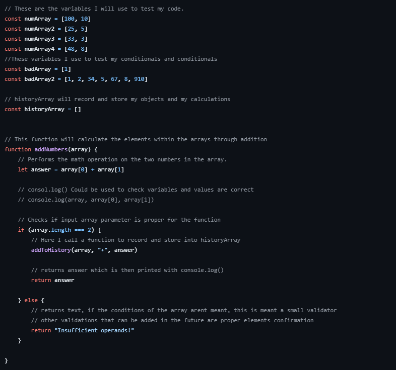
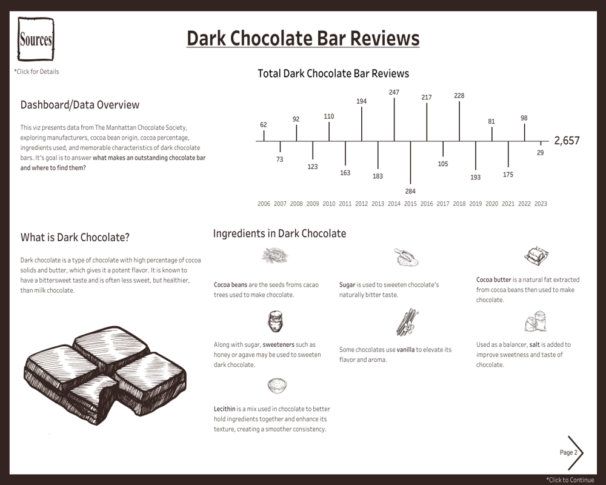
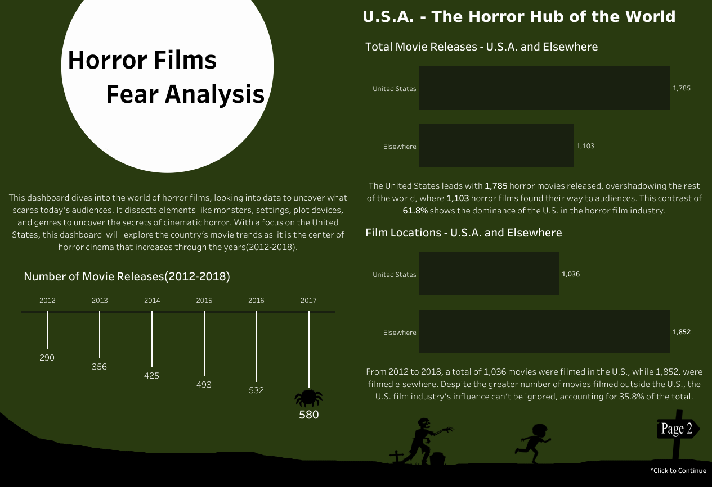
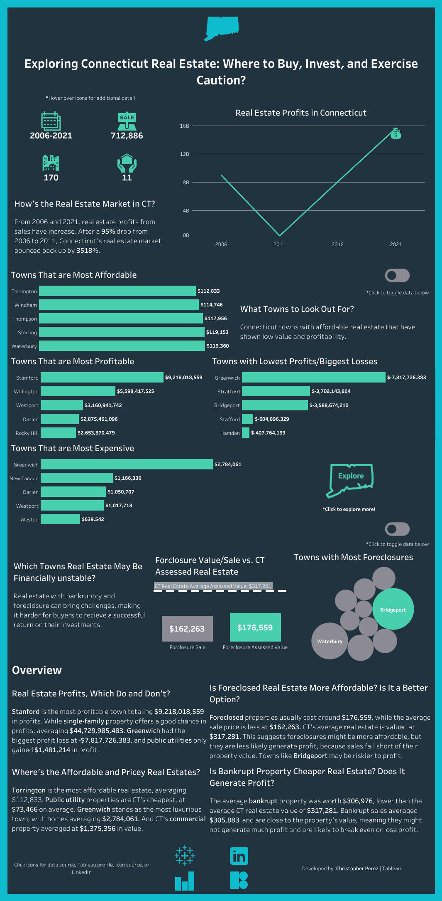
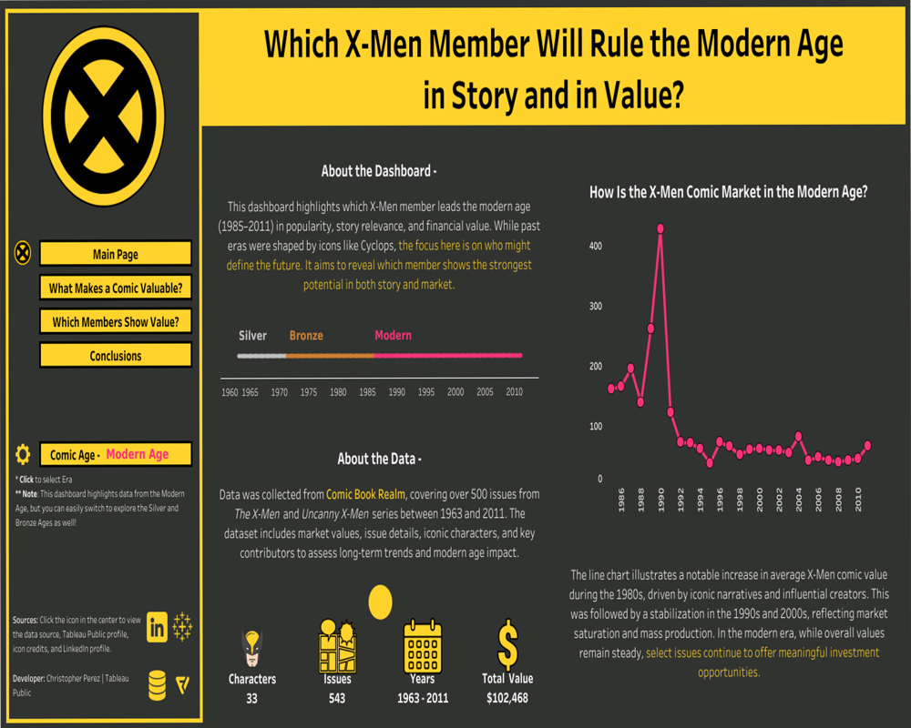

I’m passionate about technology and enjoy building things with code, especially projects that combine data, design, and real user interaction. I’m also really interested in storytelling, which is why I want to pursue both tech and journalism together in my career. My goal is to keep growing in the tech field, learning new skills, and finding ways to use technology to inform and connect people. Outside of work, I like to hike and travel because it helps me clear my mind and stay inspired. I’m always looking for new experiences that challenge me and help me grow both personally and professionally.

JavaScript CalculatorThis JavaScript project features a streamlined calculator that processes two numbers and saves the outcome for later reference. It uses a combination of functions and conditional logic to ensure valid inputs before performing the math and pushing the data into a history-tracking array. You can easily run the application through Node.js to either execute new calculations or review your stored results at any time.



